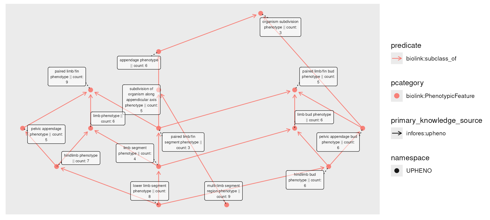

Rollups and Transitivity
Shawn T O’Neil
Vignette updated: May-16-2025
Source:vignettes/examples/transitive_rollups.Rmd
transitive_rollups.RmdFirst, let’s load some required libraries, and instantiate a
session-cached monarch_engine() for querying.
Knowledge graphs frequently incorporate ontologies, which include
complex hierarchies of classes and sub-classes. Let’s visualize a couple
of levels of this hierarchy for the phenotype
"leg phenotype" (removing "leg phenotype" as
it will make the next examples clearer).
phenos <- e |>
fetch_nodes(name == "leg phenotype") |>
expand_n(predicates = "biolink:subclass_of",
categories = "biolink:PhenotypicFeature",
direction = "out",
n = 4) |>
activate(nodes) |>
filter(name != "leg phenotype")
plot(phenos) It is not uncommon for data like this to come with additional
information; if these were a set of disease diagnoses, we might have
patient counts associated with each. Since patients receive diagnoses of
varying specificity, there may be counts on any subtype.
It is not uncommon for data like this to come with additional
information; if these were a set of disease diagnoses, we might have
patient counts associated with each. Since patients receive diagnoses of
varying specificity, there may be counts on any subtype.
Hypothesizing these phenotypes as diagnoses, we’ll simulate some count information, plotting it in the node labels:
set.seed(42)
num_nodes <- nrow(nodes(phenos))
phenos_counted <- phenos |>
activate(nodes) |>
mutate(count = rpois(num_nodes, lambda = 5))
plot(phenos_counted,
node_label = paste(name,
" || count: ", count))
A “rollup” might thus ask, how many patients are associated with each phenotype, if we include all of it’s descendants? For example, “lower limb segment phenotype” (8 patients) is a subclass of “limb segment phenotype” (4 patients), so the total number of “limb segment phenotype” patients includes both (12 patients).
The roll_up() function allows us to compute this
information. It is designed to work with dplyr’s
mutate() on node data: we provide the column specifying
information to aggregate, a function to apply over the values (amongst
all descendants), and whether each node should include its own value in
the aggregation.
node_data <- nodes(phenos_counted) |> as.data.frame()
edge_data <- edges(phenos_counted) |> as.data.frame()
msg <- capture.output(print(node_data))
warning(paste(msg, collapse = "\n"))
msg <- capture.output(print(edge_data))
warning(paste(msg, collapse = "\n"))
#
# phenos_counted_rolled <- phenos_counted |>
# activate(nodes) |>
# mutate(total = roll_up(count, fun = sum, include_self = TRUE))
#
# plot(phenos_counted_rolled,
# node_label = paste0(name,
# " || count: ", count,
# " || total: ", total))